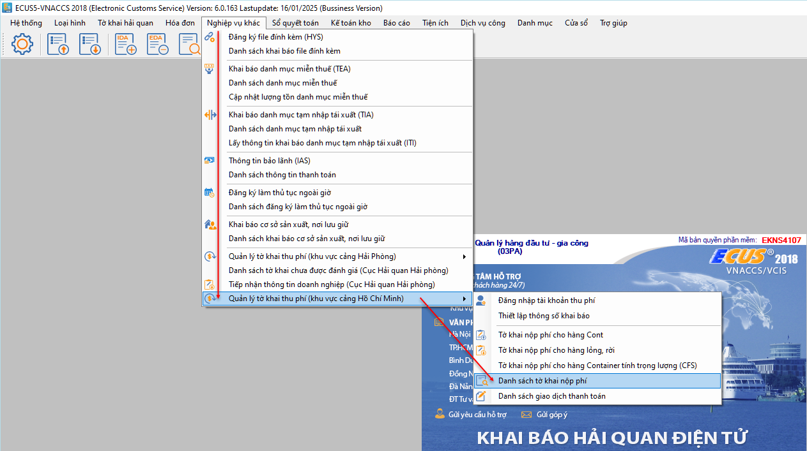
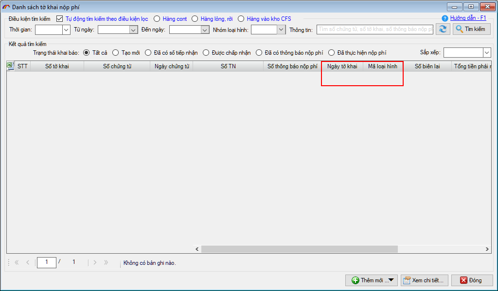
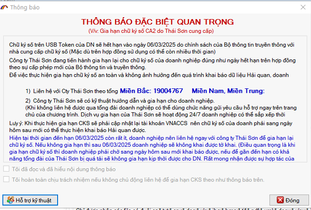
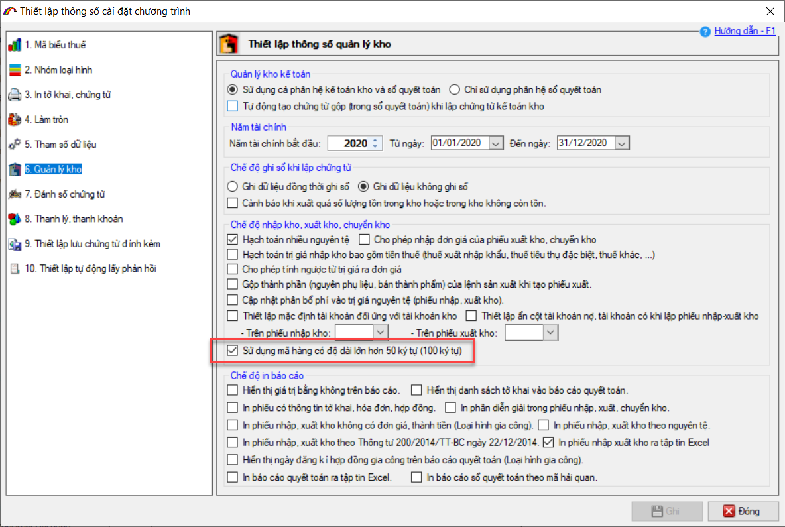

NHỮNG THAY ĐỔI TRÊN BẢN ECUS5VNACCS 2018
(Phiên bản update 16/01/2025)
Phần mềm ECUS5VNACCS2018 - Ngày phát hành 05/02/2025 | Version 6.0.163 | Lastupdate 16/01/2025 | Phiên bản CSDL 298
Phiên bản cập nhật ngày 16/01/2025 được phát hành ngày 05/02/2025 sửa đổi bổ sung một số chức năng, nhằm tăng hiệu suất phần mềm. Các chức năng được sửa đổi, bổ sung cụ thể như phần chi tiết dưới đây:
- 1. Bổ sung cột chỉ tiêu trong danh sách tờ khai nộp phí.
Phần mềm bổ sung 2 chỉ tiêu Ngày tờ khai và Mã loại hình của tờ khai nhập / xuất vào Danh sách tờ khai nộp phí để dễ dàng cho doanh nghiệp làm báo cáo & phát hiện tờ khai nào chưa đóng tiền CSHT. Chức năng được bổ sung tại menu Nghiệp vụ khác / Quản lý tờ khai thu phí (KV HCM) / Danh sách tờ khai nộp phí


- 2. Hiển thị thông báo cấp bù chữ ký số khi sử dụng chức năng cổng ký
Chữ ký số CA2 sẽ đồng loạt hết hạn vào ngày 06/03/2025 do chính sách của Bộ thông tin truyền thông với nhà cung cấp chữ ký số (mặc dù trên hợp đồng sử dụng có thể còn nhiều thời gian).
Từ ngày 01/11/2024, Công ty Thái Sơn chính thức triển khai gia hạn lại (cấp bù thời hạn) cho chữ ký số (CA2) của doanh nghiệp đúng như ngày hết hạn trên hợp đồng theo sự cấp phép mới của Bộ thông tin và truyền thông.
Với các CKS thuộc diện phải gia hạn lại, khi ký số sử dụng chức năng cổng ký trên phần mềm ECUS5VNACCS sẽ có cảnh báo như sau:

- 3. Cho phép thiết lập độ dài mã hàng trong phân hệ Kế toán kho
Hiện các mục mã hàng bên Kế toán kho chỉ cho phép nhập tối đa 50 kí tự.
Để phù hợp với nhu cầu thực tế nội bộ doanh nghiệp quản lý mã hàng, phần mềm cho phép tuỳ chọn cấu hình trong mục : Thiết lập thông số cài đặt chương trình / 6. Quản lý kho.
Số lượng ký tự được phép nhập sẽ tăng lên 100 ký tự.

- 4. Sửa đổi cách thực hiện đối với Lệnh sản xuất Kế toán kho
Khi thực hiện lệnh sản xuất bên Kế toán kho (KTK), tạo phiếu nhập xuất với trường hợp 1 mã hàng KTK tương ứng nhiều mã ECUS, phần mềm sẽ để trống mã ECUS trên phiếu và thông báo để người dùng chỉ định hoặc có có phương án tối ưu hơn (thay vì tự động điền mã hàng ECUS như phiên bản trước).
- 5. Sửa đổi bổ sung chức năng nhập danh sách hàng từ excel
Tờ khai nhập nhóm chế xuất, khi nhập danh sách hàng từ file excel phần mềm đang mặc định điền TS=0 dù biểu thuế khác B30. Ở bản cập nhật này, phần mềm ưu tiên lấy theo file excel, chỉ valid TS =0 khi mã biểu thuế =B30.
- 6. Cùng nhiều chức năng, tiện ích khác nhằm nâng cao hiệu suất chương trình...
Bản quyền © thuộc về Công ty TNHH Phát triển công nghệ Thái Sơn